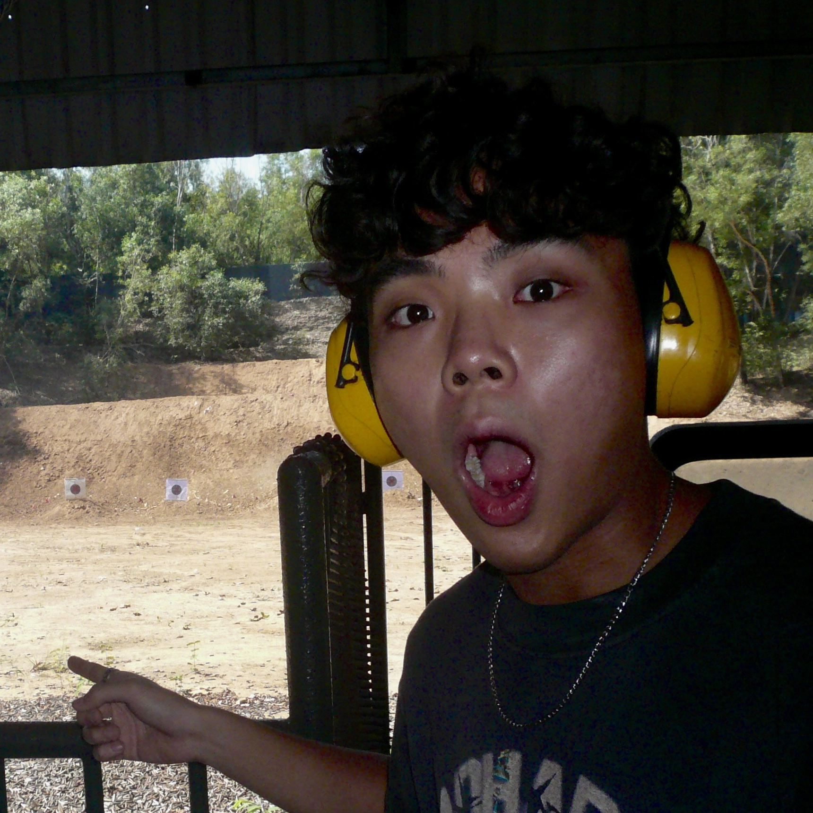
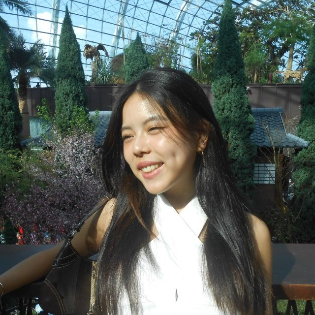
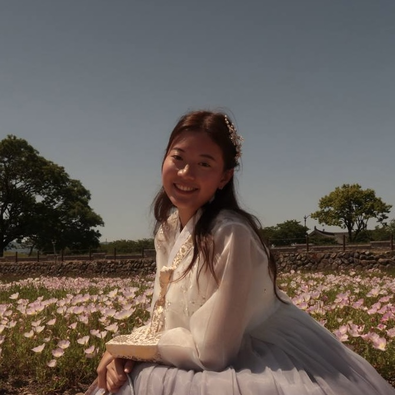

You saw Myoko in White.
Now you'll get to see it in green.
究
冬 Fuyu • Winter
Strategic Research

Nicholas Boey
LinkedIn ↗
Background:
Software Engineering major focused on complex problem-solving and highly technical quantitative analysis.
Experience:
Advanced research background, including work with MINDEF (CSIT) and international quantum research with Thailand’s QTRic.
The Myoko Fit:
Providing the rigorous, evidence-based data methodologies required to build a resilient foundation for local economic revitalization.
商
春 Haru • Spring
Business Insight

Charmaine Soo
LinkedIn ↗
Background:
Business major specializing in market analysis, investment research, and strategic positioning.
Experience:
Proven leadership in corporate relations, global brand analysis, and high-level stakeholder engagement.
The Myoko Fit:
Grounding the team’s green-season communication strategies in commercial reality and ensuring alignment with PCG’s external partners.
創
夏 Natsu • Summer
Creative Content

Phoebe Wong
LinkedIn ↗
Background:
Information Systems major with deep expertise in UI/UX and front-end development.
Experience:
Marketing Executive at SMU Ellipsis, specializing in digital content strategy and customer-facing narratives.
The Myoko Fit:
Bridging technical design with creative storytelling to build engaging, user-friendly digital campaigns for sustainable tourism.
映
秋 Aki • Autumn
Visual Production
Adam Caffrey
LinkedIn ↗
Background:
Information Systems major with four years of formal film studies and top marks in IGCSE/IB film.
Experience:
Strong leadership in NS/University, paired with hands-on environmental conservation (leading HK trail cleanups).
The Myoko Fit:
Crafting compelling, cinematic visual assets that authentically champion environmental sustainability and drive regional impact.